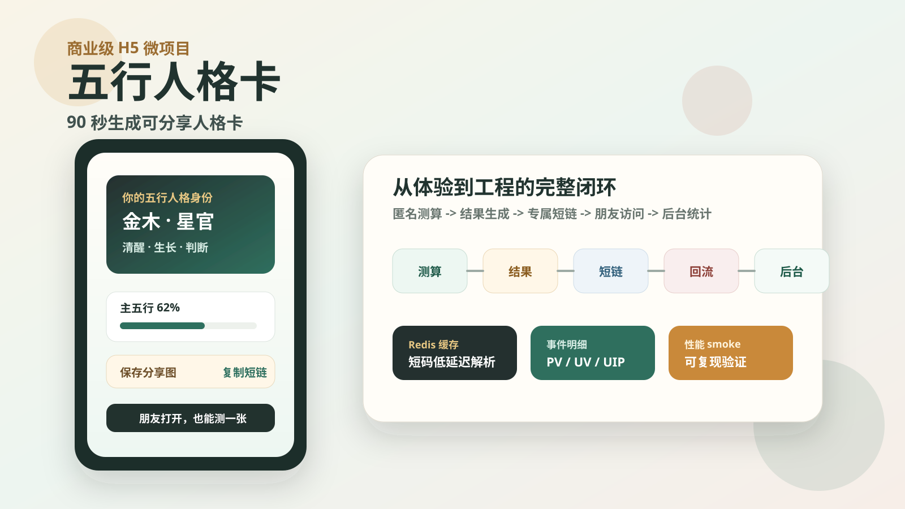
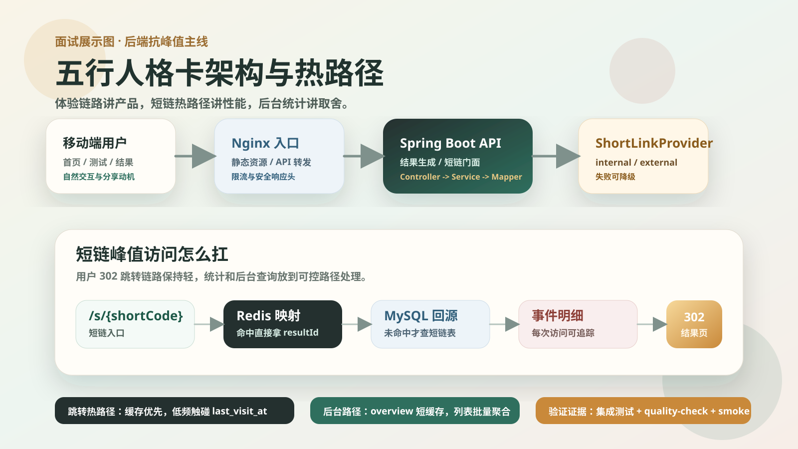

面向大学生和年轻用户，强调轻量、正向、可分享。
商业级 H5 微项目 · 短链接真实业务闭环
五行人格卡项目文档站
一个从匿名测算、结果生成、专属短链、朋友访问到后台 PV / UV / UIP 统计的完整全栈项目。 这里把产品定位、工程架构、短链接入、部署运行和版本进度整理成更适合展示的文档视图。
v2.6
当前体验版本
99/100
MVP 工程自评
PV·UV·UIP
访问统计口径
项目定位
五行人格卡不是命理预测工具，而是传统文化元素启发下的娱乐性人格测试 H5。 项目的核心价值不是“算命”，而是把用户愿意分享的结果页与可观测的短链接系统结合起来， 做出一个可上线、可演示、可复盘的 Java 后端实习作品。
每个结果生成专属短链，访问后可跳转并沉淀统计。
Docker Compose 管理 MySQL、Redis、后端和 Nginx。
产品主循环
当前产品主循环围绕“愿意开始、愿意答完、感觉被看见、愿意分享、朋友继续测”设计。 v2.6 已把测试页从瀑布式表单升级为卡片式逐题问答，并补充出生年份精确输入。
引导页
测试页
结果页
专属短链
朋友访问
后台统计
用户体验重点
- 移动端优先，页面节奏更接近 H5 测试产品。
- 出生年份支持高频选项、滑杆、+1 / -1 和手动输入。
- 默认年份即默认选择，选中答案后先确认再自动进入下一题。
- 题目选项隐藏五行属性提示，降低用户被暗示的感觉。
- 结果页强调身份表达、关键词、五行比例和分享动作。
业务闭环重点
- 测算结果保存到 `user_result`。
- 短码和结果绑定保存到 `short_link`。
- 访问和按钮行为写入 `visit_event`。
- 后台按日期、短链和来源查看数据。
架构总览
项目采用 Vue H5 + Spring Boot + MySQL + Redis + Nginx 的单机可部署架构。 后端保持 controller、service、mapper、entity、dto、vo、config、util 的分层，短链接模块通过 Provider 适配层隔离内置和外部服务模式。
移动端浏览器
Nginx
Vue H5
Spring Boot API
/s/{shortCode}
MySQL
Redis
ShortLinkProvider
短链接系统
短链接是项目的核心工程亮点。它不是展示字段，而是贯穿结果生成、分享访问、302 跳转、访问日志和后台统计的真实业务链路。
ResultService
-> ShortLinkService
-> ShortLinkProvider
-> InternalShortLinkProvider
-> ExternalShortLinkProvider
-> ExternalShortLinkClientInternal 模式
五行后端内置短码生成、短链绑定、Redis 解析缓存、无效短码空值缓存和 `/s/{code}` 302 跳转。
External 模式
通过配置调用独立短链接系统创建短链，失败时按配置降级到内置实现，五行侧继续保留 resultId 与短码业务绑定。
数据统计
统计口径覆盖首页访问、开始测试、提交、结果生成、短链生成、短链访问和结果页传播行为。 clientId、IP、User-Agent 均在后端 hash 后保存，避免落库明文个人标识。
最新优化把短链跳转热路径从实时聚合改为事件写入 + 低频展示字段更新；后台短链列表也改为批量拉结果和批量聚合 PV / UV / UIP。
部署运行
项目支持本地开发、H2 演示模式、Docker Compose 容器化运行和云服务器单机部署。 腾讯云轻量服务器部署时，Nginx 对外暴露 80 / 443，MySQL 与 Redis 不暴露公网。
cp deploy/.env.example deploy/.env
scripts/deploy-preflight.sh deploy/.env
docker compose --env-file deploy/.env -f deploy/docker-compose.yml up --build -d
scripts/docker-smoke-test.sh http://127.0.0.1 dev-token质量门禁
v0.6 之后项目进入严格质量门禁阶段。每个版本不仅要实现功能，还要保留测试、构建、文档、自评分和 GitHub 留痕。
backend: mvn test
frontend: npm run build
docker compose config
scripts/quality-check.sh
README + docs 更新
Git commit + push
查看质量评分
版本进度
完成单人测算、结果页、短链接、访问统计和后台。
Provider 架构、external 创建、外部统计和访问明细接入。
质量门禁、部署预检、CI/CD、备份回滚、安全头和分享图。
增长埋点、渠道归因、传播体验、H5 输入体验和卡片式问答。
八小时工作流沉淀
当前阶段按产品经理、普通访问者、美术经理、前端开发、资深架构师、后端开发和大厂面试官视角推进。 目标不是堆功能，而是把交互自然度、短链热路径、后台统计性能和可讲述材料一起收口。
默认年份可直接生效，答案选择有确认反馈，移动端 sticky 操作条不遮挡最后一个选项。
短链 302 不再实时 distinct 聚合，last_visit_at 限频更新，后台列表批量聚合统计。
质量门禁、性能 smoke、集成测试、截图流程和工作日志一起证明改动不是口头优化。
主视觉、架构图、项目宣传包、面试学习手册和多角色矩阵形成作品集讲述路径。
面试表达
这个项目可以作为 Java 后端实习作品，重点表达“短链接不是 Demo，而是被真实 H5 分享业务调用”的工程价值。
我做的是一个完整上线链路：用户匿名完成 H5 测算，后端生成结果并绑定短链，朋友通过短链访问同一个结果页，后台能看到 PV / UV / UIP 和短链访问明细。短链模块后来被抽象成 Provider，可以在 internal 和 external 服务之间切换。
展示素材
最终展示不要只给代码截图。建议同时准备产品主视觉、传播闭环图、后台数据截图、性能 smoke 输出和面试架构图。


手机里的结果人格卡，配一句“90 秒生成可分享的五行人格卡”。
展示卡片式逐题问答、自动前进和移动端底部主按钮。
用户分享短链，朋友打开结果页，再进入自己的测试。
短链跳转、Redis 缓存、后台 overview cache 和性能 smoke 输出。
产品首屏
答题体验
结果分享
短链跳转
后台统计
面试架构
查看宣传包
后续路线
下一阶段更适合围绕真实上线后的产品质量推进，而不是继续堆功能。
绑定正式域名，配置证书和短链子域名。
收集手机端加载、答题完成率、分享点击和结果页停留反馈。
围绕首页文案、题目顺序、分享图样式做轻量 A/B 实验。